안전관리자로 재직하던 중, ERP 개발 설명회에 참석한 적이 있습니다. 그 자리에서 기업의 자원 관리와 업무 과정이 전산 시스템으로 운영되는 모습을 보며 ERP와 같은 통합 관리 시스템에 관심을 가지게 되었습니다. 특히 재고가 자동으로 관리되고, 수요 예측에서 판매까지 이어지는 구조를 접하며 "이런 시스템을 직접 개발해 기업의 효율을 높이고 싶다"는 목표가 생겼습니다.
이후 정보처리기사 필기시험에 합격하고 현재 실기를 준비하며 JavaScript, SQL(SQLite·MySQL·PostgreSQL) 등을 학습했습니다. SAP CODE 아카데미는 단순히 코딩을 배우는 과정이 아니라, SAP와 ABAP을 기반으로 ERP 시스템을 설계·구현하는 실무 역량을 체계적으로 쌓을 수 있다는 점에서 선택했습니다.
학습 과정에서는 단순한 기능 구현보다 구조적인 이해를 우선시했습니다. ALV 구현 방식, 도메인 텍스트 매핑, 프로그램 구조 설계 등 다양한 기술을 비교·분석하며 동작 원리와 구조를 끝까지 추적했고, 반복적으로 발생하는 로직은 공통 함수로 정리해 팀 전체의 시행착오를 줄였습니다.
Experience
교육 이력
2025.10 ~ 2026.07
👑 PM
SAP 코리아 — SAP CODE 아카데미 1기 (개근 이수)
ERP 구축 프로젝트 PM 겸 FI·QM 개발자
화장품 제조·판매 기업 Master Pack ERP 구축 프로젝트를 PM으로 이끌며 FI·QM 모듈 커스텀 개발 총괄.
전표 조회·역분개, 외화평가, 자산관리, 환율 API 연동, Fiori BP 마스터, 완제품 검수 프로그램 등
8종의 CBO 프로그램을 직접 설계·구현. 개근 이수.
ABAPModule PoolALVCDS ViewFioriODataFIQM
Projects
CBO 개발 프로그램 · 8종
SAP CODE 아카데미 Master Pack ERP 프로젝트에서 PM 겸 FI·QM 모듈 개발자로 직접 설계·구현한 프로그램입니다.
카드를 클릭하면 상세 내용을 확인할 수 있습니다.
01
전표 조회 및 역분개 프로그램
ZRE3FI0003 · ABAP Report
FIALVReport
›
FI 전표 종합 조회 및 역분개 처리 프로그램. 4-Tab 선택화면 + Split ALV + 동적 TOP-OF-PAGE + PDF 출력.
하나의 화면에서 전체/AR/AP/GL 전표를 분기 조회하고, 마이너스 역분개를 한 클릭으로 처리합니다.
화면 구성
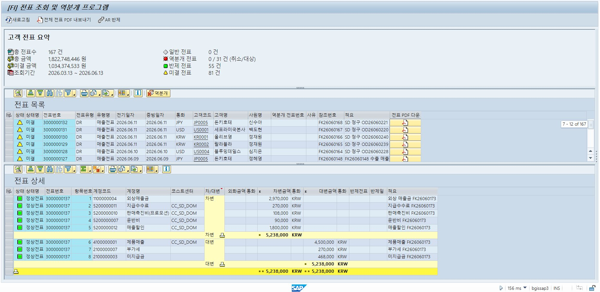
전표 조회 메인 — Split ALV (목록 + 상세)
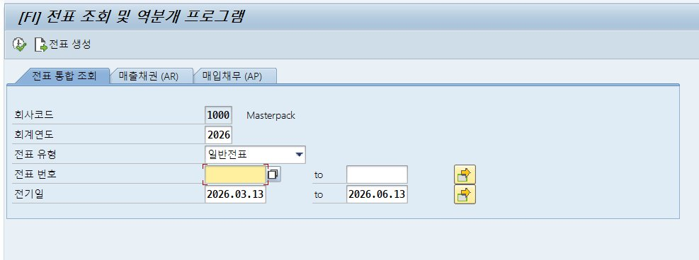
선택 화면 — 전표 통합 조회 Tab
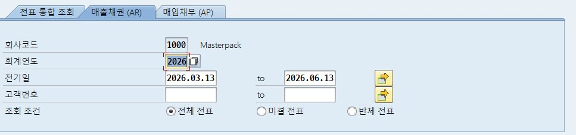
선택 화면 — AR Tab (고객번호 + 조회 조건)
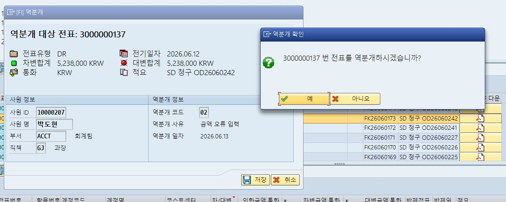
역분개 팝업 — 사원 정보 자동 조회 + 역분개 사유 입력
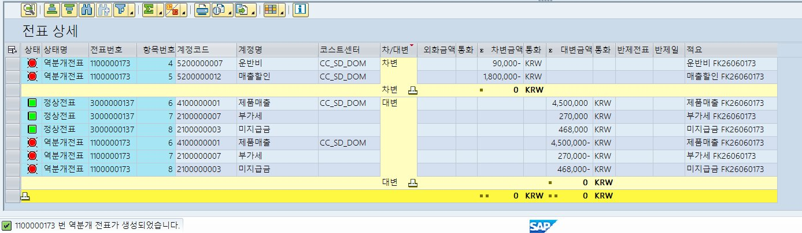
역분개 후 — 마이너스 전표 생성 완료 (정상 + 역분개 병렬 표시)
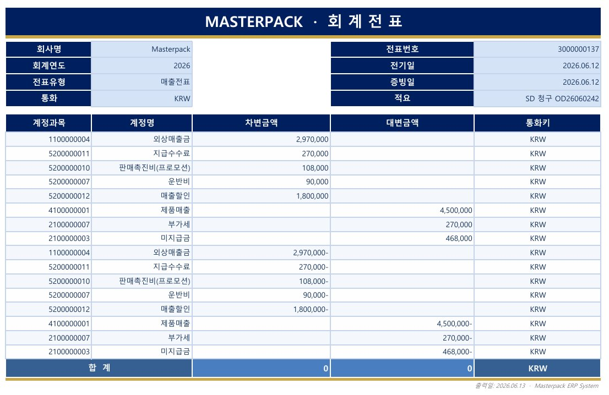
PDF 출력 — ABAP Spool → 회계전표 PDF 직접 다운로드
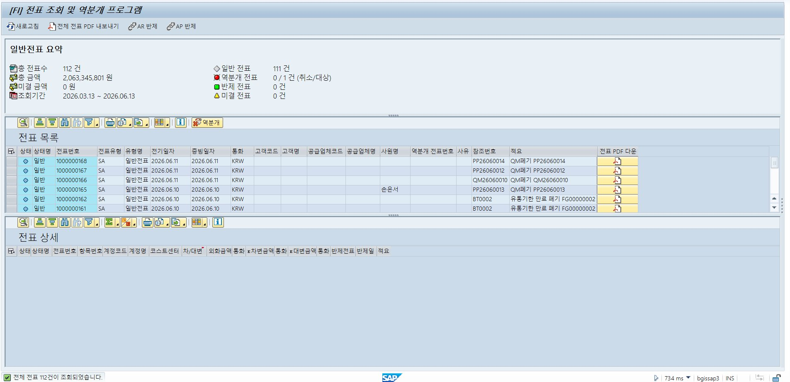
전표 통합 조회 — 일반전표 탭 결과 화면
핵심 기능 상세
4-Tab 선택화면 — 전체/AR/AP/GL 탭 전환 시 해당 탭 조건만 검증 후 RETURN, 타 탭 필수값 오류 방지
Split ALV — 상단 전표 목록 클릭 시 하단 전표 상세 동적 갱신. 차변/대변 컬럼 분리로 가독성 확보
역분개 전표 하단 병렬 표시 — set_rev_item FORM으로 STBLG 연결된 역분개 전표를 원본 바로 아래 자동 배치
마이너스 역분개 — SHKZG 유지 + dmbtr/wrbtr에 ×(-1) 적용. 전표유형 AB로 신규 채번 후 원본 STBLG 양방향 업데이트
반제 전표 역분개 — DZ/KZ 유형 시 set_clear FORM으로 상대방 전표 augbl 초기화 후 역분개 진행
ABAP Spool → PDF 직접 다운로드 — 개별 전표 / 전체 전표 PDF 지원
동적 TOP-OF-PAGE — CL_DD_DOCUMENT로 총 전표수·금액·미결·반제·역분개·조회기간 3×3 카드 자동 생성
* 마이너스 역분개 — SHKZG 유지, dmbtr × -1FORMreverse_itemsUSING pv_belnr TYPE zte3fi0002-belnr.
LOOP AT gt_item INTO DATA(ls_orig).
APPEND VALUE #( BASE CORRESPONDING #( ls_orig )
belnr = pv_belnr
blart = 'AB'
shkzg = ls_orig-shkzg "SHKZG 유지
dmbtr = ls_orig-dmbtr * -1"금액만 반전
wrbtr = ls_orig-wrbtr * -1
dmbtr_s = COND #( WHEN ls_orig-shkzg = 'S'THEN abs( ls_orig-dmbtr ) ELSE0 )
dmbtr_h = COND #( WHEN ls_orig-shkzg = 'H'THEN abs( ls_orig-dmbtr ) ELSE0 )
) TO gt_rev_item.
ENDLOOP.
ENDFORM.
* 역분개 전표를 원본 전표 바로 아래 배치 (중복 방지)FORMset_rev_item.
DATA: lt_temp_header LIKE gt_header.
LOOP AT gt_header INTO DATA(ls_hdr).
IF line_exists( lt_temp_header[ belnr = ls_hdr-belnr ] ).
CONTINUE.
ENDIF.
APPEND ls_hdr TO lt_temp_header.
"STBLG가 있으면 역분개 전표를 바로 다음 행에 추가IF ls_hdr-stblg IS NOT INITIAL.
READ TABLE gt_header INTO DATA(ls_rev)
WITH KEY belnr = ls_hdr-stblg.
IF sy-subrc = 0.
IF NOT line_exists( lt_temp_header[ belnr = ls_rev-belnr ] ).
APPEND ls_rev TO lt_temp_header.
ENDIF.
ENDIF.
ENDIF.
ENDLOOP.
gt_header = lt_temp_header.
ENDFORM.
* 처분 공통 — POPUP 확인 → DB 갱신 → 전표 생성 → COMMITSELECT SINGLE * FROM ZTE3CM0002 INTO ls_asset
WHERE anln1 = pv_anln1.
ls_asset-abflg = 'X'.
ls_asset-abtyp = pv_abtyp.
ls_asset-abdat = sy-datum.
MODIFY ZTE3CM0002 FROM ls_asset.
* 매각(S): 보통예금/외상매출금 + 처분이익(4200000004)/손실(5300000005)* 폐기(P): 감가상각누계액(차변) + 자산계정(대변) + 처분손실CALL METHOD ZCL_E3_FI_DOCUMENT=>POST_DOCUMENTEXPORTING is_header = ls_header it_items = lt_items.
COMMIT WORK AND WAIT.
* CDS View로 12개월 감가상각 한 번에 조회SELECT anlkl, anln1, anlnt, aprice, accum, bookvalue,
alife, afasl, m01, m02, m03, m04, m05, m06,
m07, m08, m09, m10, m11, m12
FROMzcds_e3_fi_0015( p_gjahr = @pa_gjahr )
WHERE bukrs = @pa_bukrs
AND anlkl IN @gr_anlkl
AND abflg NE'X'INTO CORRESPONDING FIELDS OF TABLE @gt_item.
ABAPALV TreeALV ChartCDS ViewGOSBatch JobFI
04
환율 API 연동 프로그램
ZRE3FI0002 · ABAP Report
FIHTTP Client
›
외화 평가·환산의 기준이 되는 환율 데이터를 외부 API에서 실시간 가져와 SAP 내부 마스터로 적재.
USD·EUR·JPY 3통화 동시 적재. GDATU 역순 저장으로 최신 환율 단건 SELECT 지원.
화면 구성
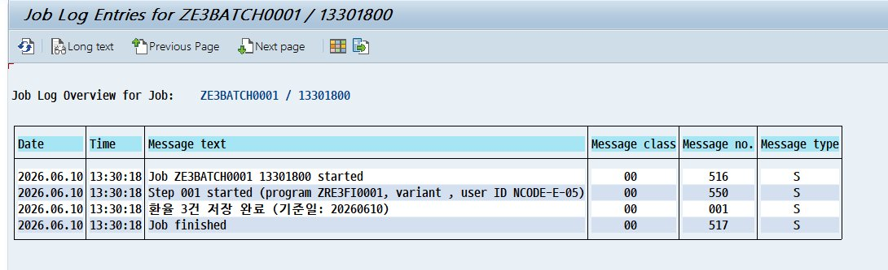
ZTE3FI0008 적재 결과 — EUR/JPY/USD 3통화 GDATU 역순 저장 (218건)
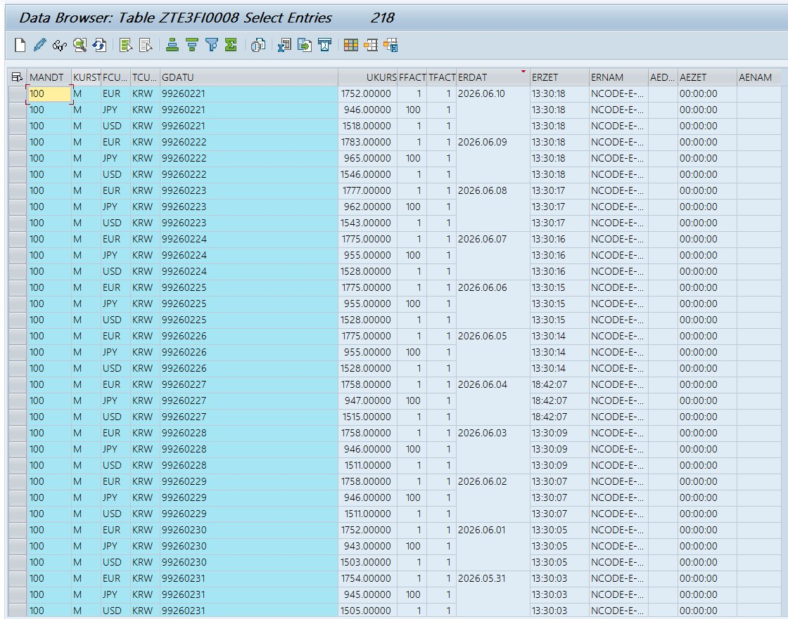
배치잡 실행 로그 — ZE3BATCH0001 환율 3건 저장 완료 (기준일: 20260610)
핵심 기능 상세
외부 환율 API 실시간 호출 — cl_http_client로 GET 요청 → JSON 응답 수신 → /ui2/cl_json으로 ABAP 내부 테이블 변환
GDATU 역순 저장 — 99999999 - sy-datum 공식으로 역순 변환. ASC 정렬 시 최신 환율이 항상 맨 위 → SELECT SINGLE 한 줄로 최신 환율 조회. SAP 표준 패턴
JPY FFACT=100 자동 세팅 — JPY는 100단위 환산 비율 적용. COND 구문으로 통화별 자동 분기
3통화 동시 적재 — EUR·JPY·USD 루프 처리 후 COMMIT WORK AND WAIT 일괄 반영
배치잡 연동 — ZE3BATCH0001로 매일 자동 실행. 후속 외화평가·환율 계산 프로그램의 데이터 기준점
* 1) HTTP 클라이언트 생성 및 호출CALL METHOD cl_http_client=>create_by_urlEXPORTING url = gv_api_url
IMPORTING client = lo_http_client.
lo_http_client->request->set_method( 'GET' ).
lo_http_client->send( ). lo_http_client->receive( ).
lv_json = lo_http_client->response->get_cdata( ).
* 2) JSON → ABAP 변환
/ui2/cl_json=>deserialize(
EXPORTING json = lv_json
CHANGING data = lt_rate ).
* 3) GDATU 역순 변환 후 적재LOOP AT lt_rate INTO ls_rate.
ls_tcurr-gdatu = |{ 99999999 - sy-datum }|.
ls_tcurr-ffact = COND #(
WHEN ls_rate-currency = 'JPY'THEN100ELSE1 ).
MODIFY ZTE3FI0008 FROM ls_tcurr.
ENDLOOP.
COMMIT WORK AND WAIT.
* ZTE3FI0008 저장 구조* KURST : 환율 유형 (M=중간, B=매입, G=매도)* FCURR : From 통화 (USD, EUR, JPY)* TCURR : To 통화 (KRW)* GDATU : 유효일자 — 역순 저장 (99999999 - 실제일자)* → ASC 정렬 시 최신이 맨 위, SELECT SINGLE로 조회* UKURS : 환율 값* FFACT : 환산 비율 (JPY=100, 나머지=1)* TFACT : 목적 통화 비율 (항상 1)
ABAPHTTP ClientJSON/ui2/cl_jsonFIBatch Job
05
Fiori BP 마스터 프로그램
ZCDS_E3_FI_0013 · Fiori / OData
FioriCDS ViewOData
›
고객·공급업체 마스터를 통합 Business Partner 뷰로 묶어 Fiori 웹 UI에서 CRUD.
CDS UNION ALL의 정석을 실전에서 다룬 프로그램. SEGW OData CRUD 풀세트 구현.
화면 구성
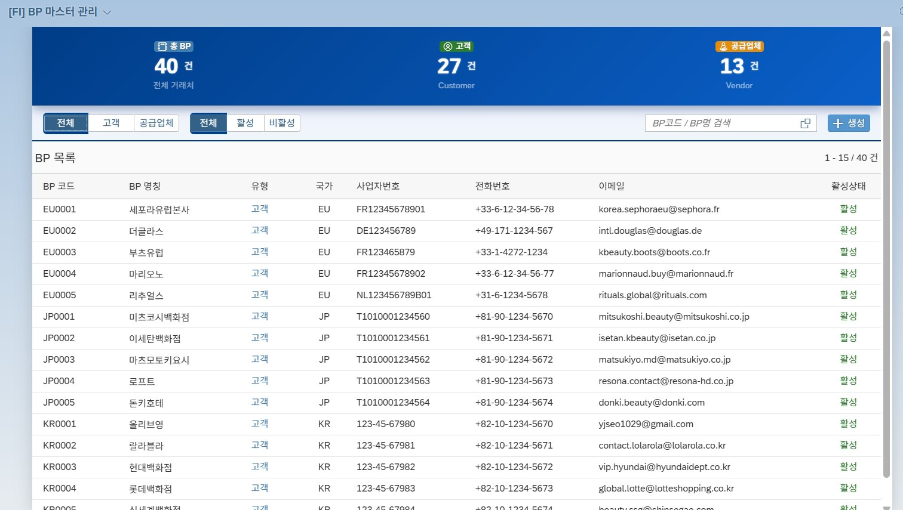
BP 목록 — 총 BP·고객·공급업체 카운트 카드 + 유형/상태 필터
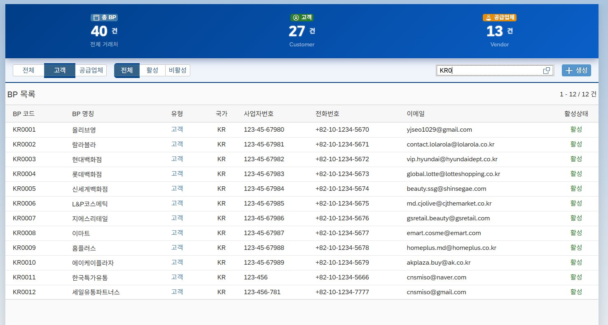
고객 탭 + BP코드 검색 — KR0 입력 시 국내 고객 12건 필터링
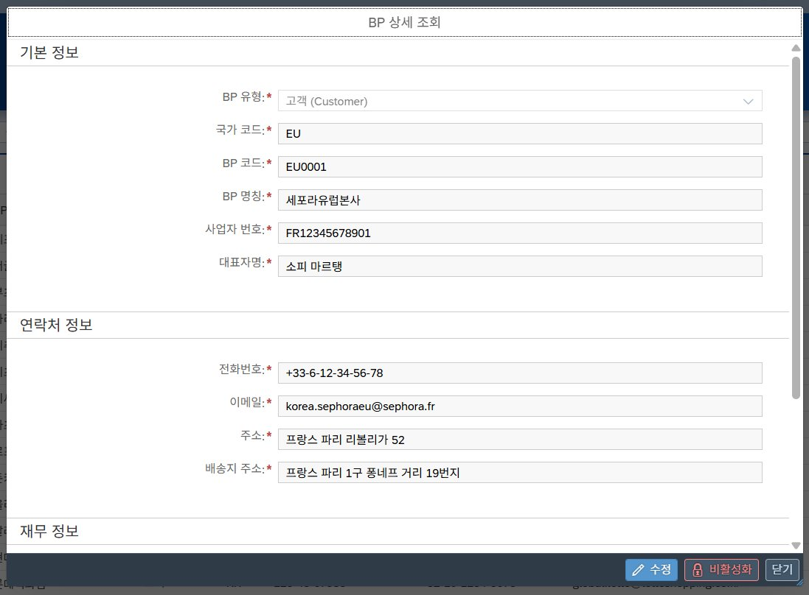
BP 상세 조회 — 기본·연락처·재무 정보 + 수정/비활성화
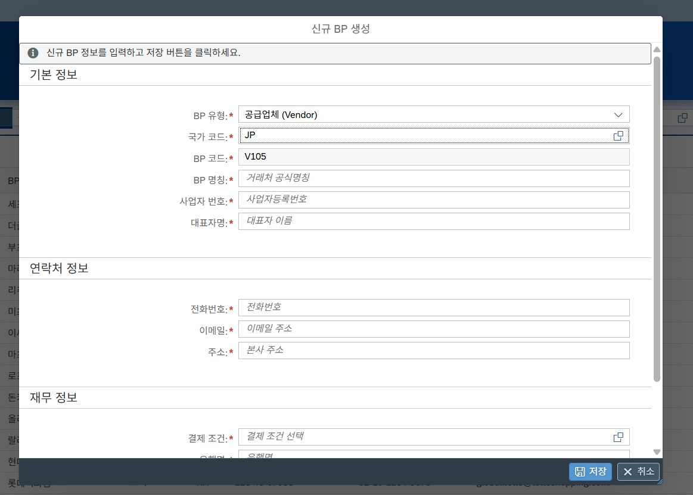
신규 BP 생성 — 유형 선택 후 기본·연락처·재무 정보 입력
핵심 기능 상세
CDS UNION ALL 통합 BP 뷰 — 고객(ZTE3SD0001)과 공급업체(ZTE3MM0002)를 BpType=C/V로 구분해 단일 뷰로 통합
유형·상태 필터 — 전체/고객/공급업체 탭 + 전체/활성/비활성 필터 조합. BP코드·BP명 실시간 검색
요약 카드 — 총 BP·고객·공급업체 건수 상단 카드로 한눈에 파악
BP 상세 조회 — 기본 정보 + 연락처(전화·이메일·주소) + 재무 정보(결제조건·은행 정보) 통합 팝업
신규 BP 생성 — 유형 드롭다운 선택 시 폼 동적 분기. 필수값 검증 후 OData CREATE 호출
수정 / 비활성화 — OData UPDATE/DELETE. UseFlag 필드로 논리 삭제 처리
@AbapCatalog.sqlViewName: 'ZCDSV_E3_FI_0013'@EndUserText.label: '[FI] BP 통합 VIEW'define viewZCDS_E3_FI_0013as select from zte3sd0001
{
key kunnr as BpCode,
key cast('C'as abap.char(1)) as BpType,
name1 as BpName, expkz as CountryCode,
cast(useflag as abap.char(1)) as UseFlag,
sdemail as Email, sdname as RepName
}
union allselect from zte3mm0002
{
key lifnr as BpCode,
key cast('V'as abap.char(1)) as BpType,
vennm as BpName, land1 as CountryCode,
cast(statu as abap.char(1)) as UseFlag,
venmail as Email, repnm as RepName
}
* OData GET_ENTITYSET — BpType / BpCode 필터 처리METHODbp_get_entityset.
LOOP AT it_filter_select_options
ASSIGNING FIELD-SYMBOL(<fs_filter>).
CASE <fs_filter>-property.
WHEN'BpCode'.
MOVE-CORRESPONDING <fs_filter>-select_options TO lr_bp_code.
WHEN'BpType'.
MOVE-CORRESPONDING <fs_filter>-select_options TO lr_bp_type.
ENDCASE.
ENDLOOP.
SELECT * FROMZCDS_E3_FI_0013WHERE BpCode IN @lr_bp_code AND BpType IN @lr_bp_type
INTO TABLE @et_entityset.
ENDMETHOD.
ABAPCDS ViewUNION ALLFioriSAPUI5ODataSEGW
06
완제품 검수 프로그램
SAPMZE3QM0001 · Module Pool
MMQMModule Pool
›
제조 라인에서 생산 완료된 제품의 품질·수량 최종 검수. 합격 품목에 한해 입고·재고 마스터 자동 연동.
Excel 템플릿 업로드 방식으로 검수 결과 입력. 제조원가(직접비) 명세서 연동.
화면 구성
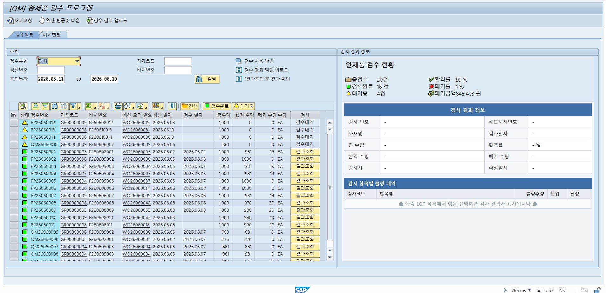
메인 — 검수목록 탭 + 우측 완제품 검수 현황 (합격률·폐기율·검사항목별 불량)
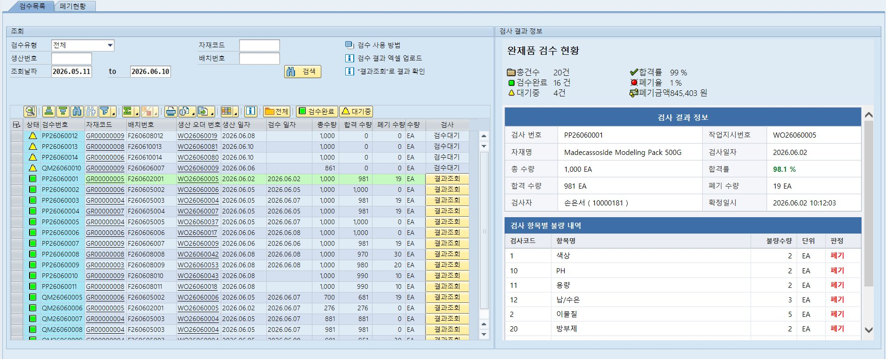
검사 결과 상세 — 항목별 불량 수량·판정 + 합격률 98.1% 표시
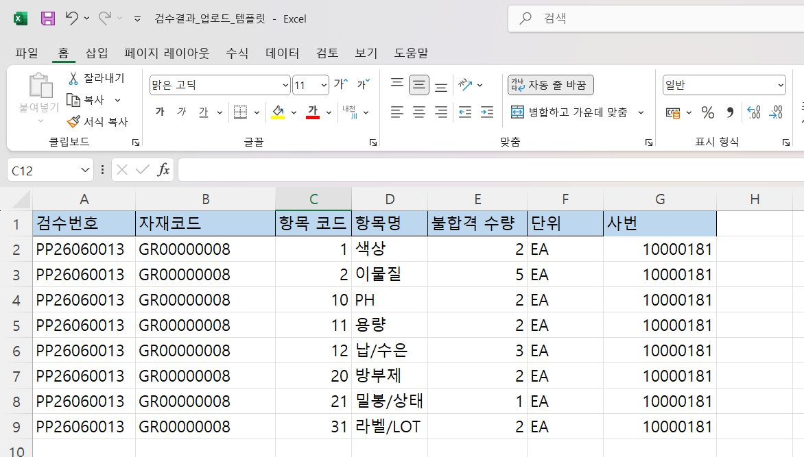
Excel 템플릿 — 검수번호·자재코드·항목코드·불합격 수량 입력 양식
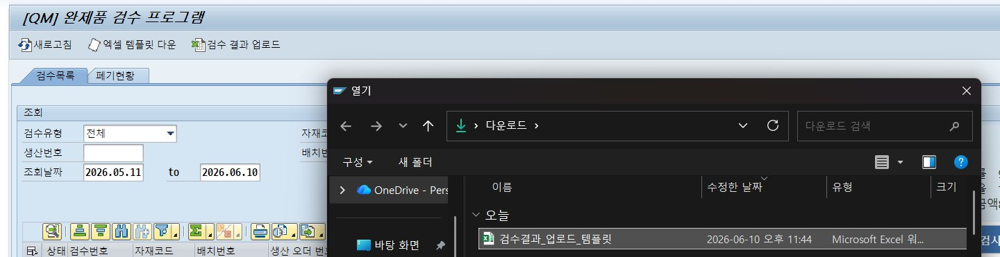
Excel 업로드 — 템플릿 다운 → 현장 작성 → 시스템 업로드
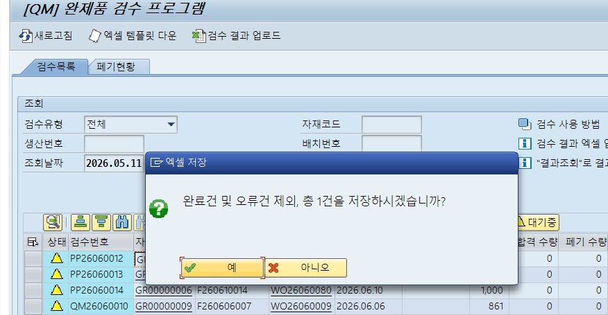
저장 확인 팝업 — 완료건 및 오류건 제외 후 저장 처리
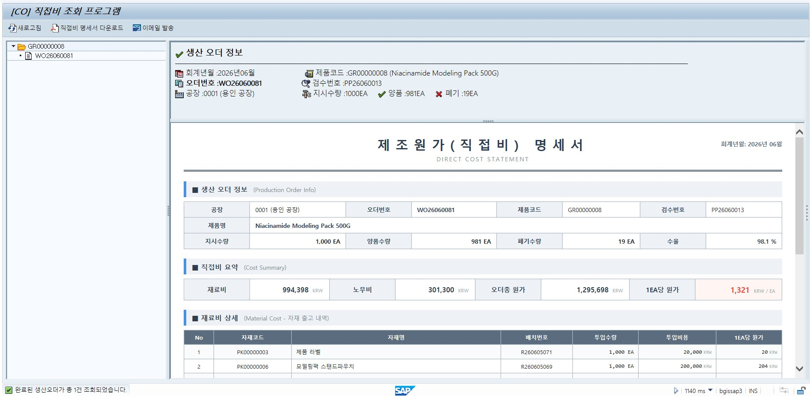
제조원가(직접비) 명세서 — 재료비·노무비·1EA당 원가 + 자재별 출고 내역
핵심 기능 상세
검수목록 조회 — 검수유형·자재코드·생산번호·날짜 조건 검색. 전체/검수완료/대기중 탭 필터. 우측 패널에 현황 요약 카드 실시간 갱신
Excel 템플릿 업로드 방식 — 엑셀 템플릿 다운로드 → 현장에서 항목별 불합격 수량 기입 → 시스템 업로드 → GUI_UPLOAD로 파싱 후 DB 반영
검사 결과 상세 — 행 선택 시 우측에 검사 항목별 불량 내역(색상·PH·용량·납/수은·방부제 등) 자동 표시. 합격률·폐기 수량 실시간 계산
제조원가 명세서 연동 — 합격 처리 시 생산오더 기준 제조원가(직접비) 명세서 생성. 재료비·노무비·1EA당 원가 산출. PDF 다운로드 + 이메일 발송
페기현황 탭 — 폐기 처리된 LOT 이력 별도 관리
ABAPModule PoolMMQMALVGUI_UPLOADExcel Template
07
Fiori 전표 조회 앱
ZE3_FI_POST_SEARCH · Fiori / OData
FioriCDS ViewODataFI
›
FI 전표 헤더·아이템을 Fiori 웹 UI에서 조회하는 앱. CDS View 2개(헤더/아이템)를 OData로 노출.
전표유형별 현황 대시보드 + 통화별 현황 + 헤더 클릭 시 아이템 드릴다운 + Excel 저장 지원.
화면 구성
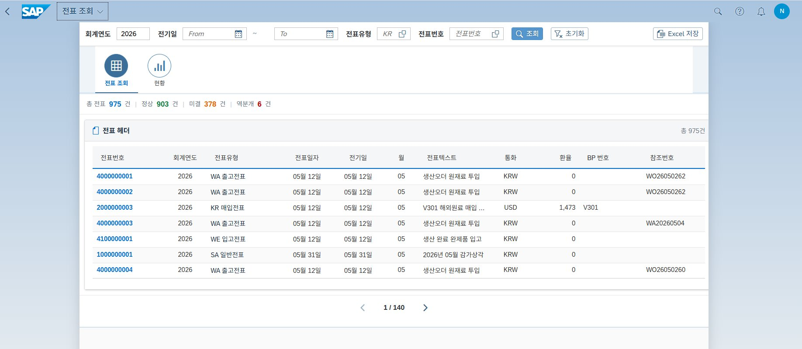
전표 조회 탭 — 조건 검색 + 전표 헤더 목록 (총 975건)
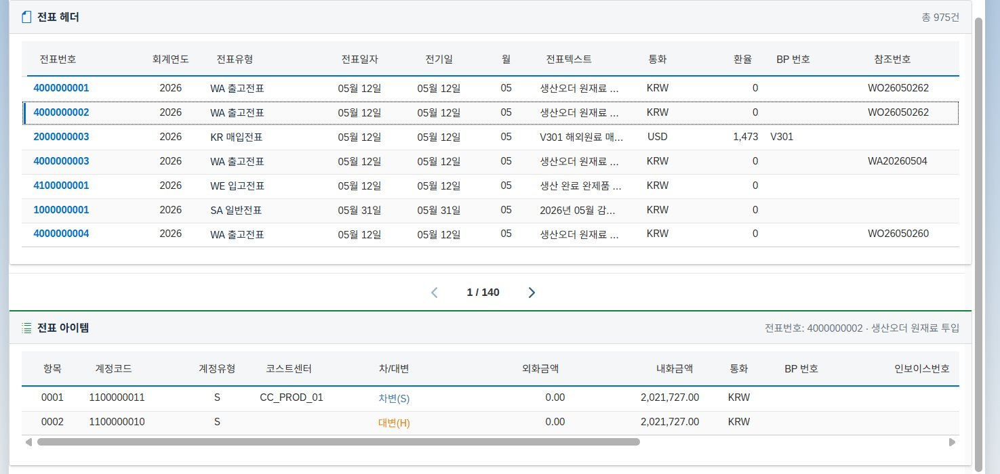
헤더 클릭 시 하단에 전표 아이템 자동 표시 (차/대변 구분)
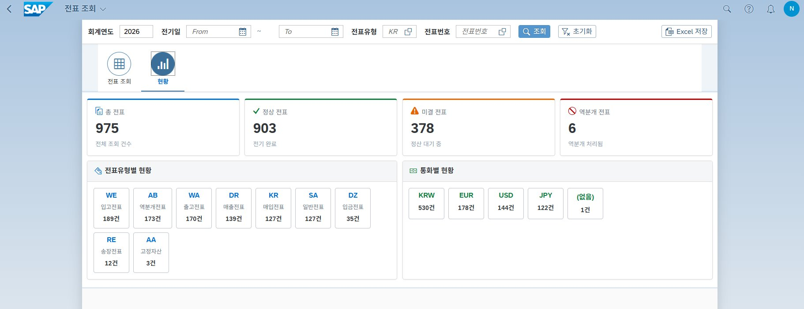
현황 탭 — 총/정상/미결/역분개 카드 + 전표유형별·통화별 현황
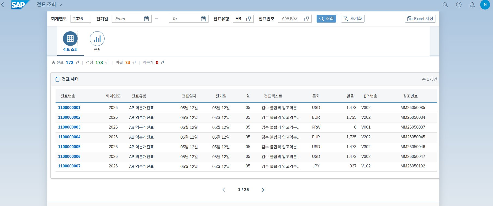
전표유형 AB 필터 — 역분개전표 173건만 필터링
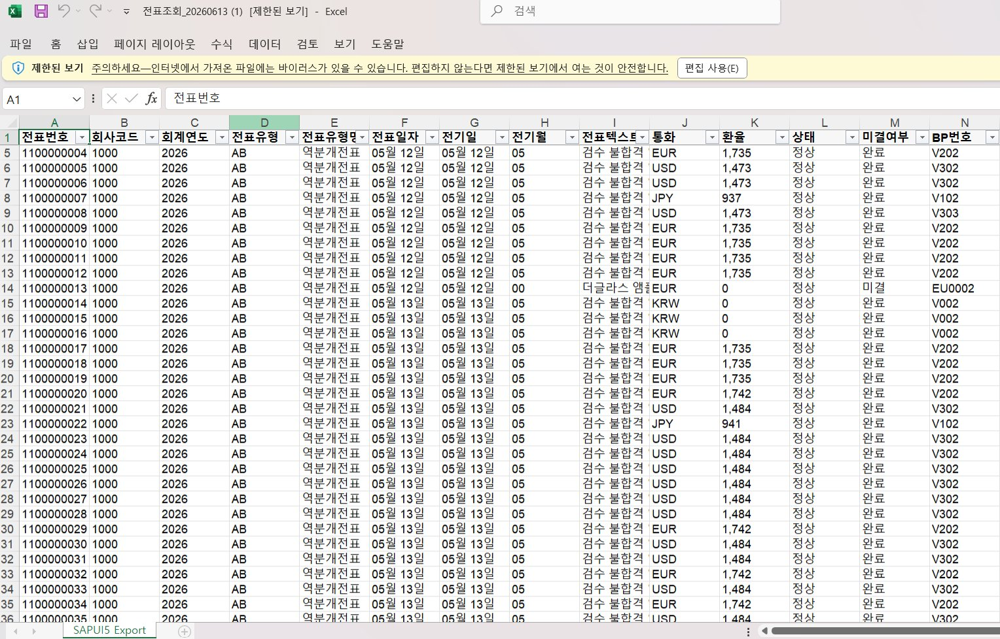
Excel 저장 — 현재 검색 조건 결과를 xlsx로 직접 다운로드
핵심 기능 상세
CDS View 2개 — 헤더(ZCDS_E3_FI_0007)·아이템(ZCDS_E3_FI_0006) 분리 설계. @OData.publish: true로 자동 노출
전표 조회 탭 — 회계연도·전기일 범위·전표유형·전표번호 복합 조건 검색. 전표 헤더 목록 페이징(140페이지)
헤더 드릴다운 — 전표번호 클릭 시 하단에 전표 아이템 자동 로드. 차/대변 색상 구분 표시
현황 대시보드 탭 — 총/정상/미결/역분개 건수 카드 + 전표유형별(WE/AB/WA/DR/KR/SA/DZ/RE/AA) + 통화별(KRW/EUR/USD/JPY) 분포
Excel 저장 — 현재 검색 조건 결과를 SAPUI5 sap.ui.export로 xlsx 직접 다운로드
@AbapCatalog.sqlViewName: 'ZCDSV_E3_FI_0007'@EndUserText.label: '[FI] 전표 조회 헤더'@OData.publish: truedefine viewZCDS_E3_FI_0007as select from zte3fi0002
{
key bukrs as Bukrs, key gjahr as Gjahr, key belnr as Belnr,
blart as Blart, budat as Budat, monat as Monat,
bltxt as Bltxt, waers as Waers, kursf as Kursf,
bstat as Bstat, kunnr as Kunnr, lifnr as Lifnr,
stblg as Stblg, stgrd as Stgrd, open_flag as OpenFlag,
erdat as Erdat, ernam as Ernam, rev_date as RevDate
}
@AbapCatalog.sqlViewName: 'ZCDSV_E3_FI_0006'@EndUserText.label: '[FI] 전표 조회 아이템'@OData.publish: truedefine viewZCDS_E3_FI_0006as select from zte3fi0003
{
key bukrs as Bukrs, key gjahr as Gjahr,
key belnr as Belnr, key buzei as Buzei,
saknr as Saknr, koart as Koart,
kostl as Kostl, shkzg as Shkzg,
@Semantics.amount.currencyCode: 'Waers'
wrbtr as Wrbtr,
@Semantics.amount.currencyCode: 'Waers'
dmbtr as Dmbtr,
@Semantics.currencyCode: true
waers as Waers,
kunnr as Kunnr, lifnr as Lifnr,
augbl as Augbl, augdt as Augdt
}
ABAPCDS ViewODataFioriSAPUI5FIExcel Export
08
Common Posting Class · Function Module
ZCL_E3_FI_DOCUMENT · ZFGE3FI01 · Team Shared
FIABAP OOFunction ModuleShared
›
SD·MM·PP·FI·CO 전 모듈에서 공용으로 사용하는 Posting Class와 팝업 Function Module을 설계·구현.
단일 인터페이스로 Number Range·환율·차대변 검증·CO Integration을 통합해 팀 전체의 중복 개발을 제거했습니다.
모듈별 Posting 시나리오 정리표 — SD 국내 판매 출하·청구·채널수수료·입금 분개를 팀과 공유
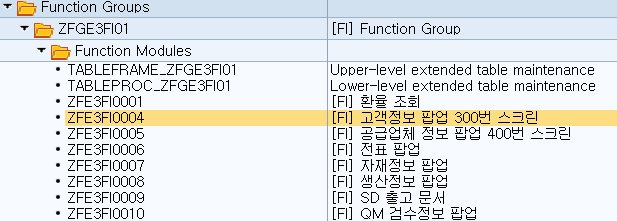
ZFGE3FI01 Function Group — 고객·공급업체·전표·자재·생산·SD/QM 팝업 10종
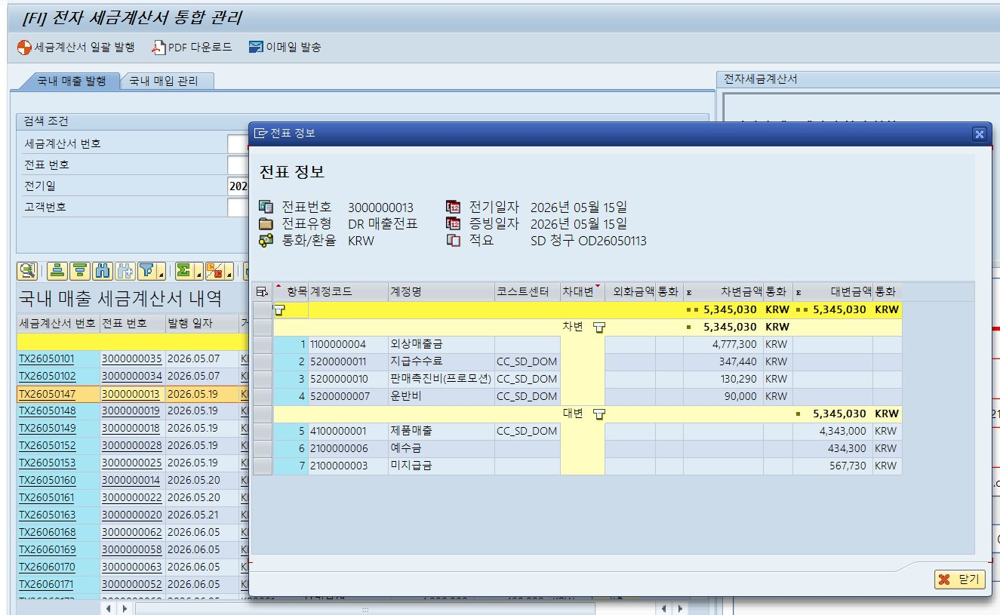
전자세금계산서 관리 — ZFE3FI0006 Function Module로 전표 상세 조회 연동
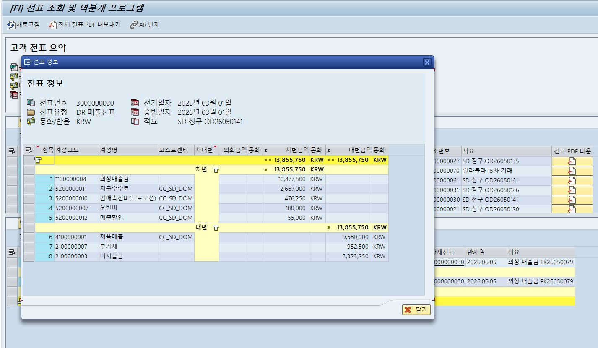
전표 정보 팝업 — 어느 화면에서든 ZFE3FI0006 한 줄 호출로 동일한 팝업 표시
Posting Class — ZCL_E3_FI_DOCUMENT
단일 진입점 POST_DOCUMENT (Public Method) — 전표유형(BLART)에 따라 AR/AP/GL Method로 자동 분기. 호출부에서 전표유형별 로직을 알 필요 없음
환율 자동 조회 — 외화 전표 시 Function Module ZFE3FI0001로 기준일자·통화 환율 자동 세팅. KRW면 외화 필드 자동 클리어
Number Range 자동 채번 — BLART별 Number Range 자동 매핑 (SA=01, AB=02, KR=03, DR=05, AA=11 등)
차대변 불일치 사전 차단 — 차변합계 ≠ 대변합계 시 ROLLBACK 후 오류 메시지 반환
CO Integration 자동화 — FI 전표 생성 후 _POST_CO_DOCUMENT Method로 CO 전표 자동 생성. CO 실패 시 FI도 ROLLBACK
전 모듈 재사용 — SD·MM·PP·FI·CO 전표가 모두 이 Class 한 곳을 호출. 모듈별 Posting 시나리오를 정리해 팀원과 공유
Function Group — ZFGE3FI01
ZFE3FI0004 — Customer Info Popup (Screen 300): 고객 마스터 상세 조회
ZFE3FI0005 — Vendor Info Popup (Screen 400): 공급업체 마스터 상세 조회
ZFE3FI0006 — Document Popup: 전표번호·회사코드·회계연도 입력받아 Screen 0500에 전표 헤더+아이템 표시. 어느 프로그램에서든 동일한 UI 제공
ZFE3FI0007~0010 — Material / Production / SD Delivery / QM Inspection Info Popup
Screen 공용화로 UI 통일성 확보 — 같은 Function Group 내 Screen을 공유해 팀원이 CALL FUNCTION 한 줄로 통일된 팝업 호출
* 공용 진입점 — BLART로 AR/AP/GL 자동 분기 + 환율 자동 조회METHODpost_document.
* 외화 시 Function Module ZFE3FI0001로 환율 자동 조회IF is_header-waers IS NOT INITIAL AND
is_header-waers NE'KRW'.
CALL FUNCTION'ZFE3FI0001'EXPORTING iv_date = is_header-budat
iv_fcurr = is_header-waers
IMPORTING ev_ukurs = lv_ukurs.
ENDIF.
CASE is_header-blart.
WHEN'DR'OR'DZ'. "AR 매출채권
_post_document_ar( ... ).
WHEN'KR'OR'KZ'OR'RE'. "AP 매입채무
_post_document_ap( ... ).
WHEN'SA'OR'WA'OR'WE'OR'AB'OR'AA'. "GL/MM/역분개/자산
_post_document_gl( ... ).
ENDCASE.
ENDMETHOD.
* 공통 처리 — 차대변 검증 → 채번 → INSERT → CO Integration → COMMITMETHOD_post_document_common.
* 1. 차대변 불일치 차단IF lv_debit NE lv_credit.
ev_msg = |차대 불일치! 차변:{ lv_debit } / 대변:{ lv_credit }|.
RETURN.
ENDIF.
* 2. BLART → Number Range 자동 매핑* SA=01 AB=02 KR=03 KZ=04 DR=05 DZ=06 WA=07 WE=08 RE=09 AA=11CALL FUNCTION'NUMBER_GET_NEXT'EXPORTING nr_range_nr = lv_nr object = 'ZNRE3FI01'IMPORTING number = lv_belnr.
* 3. 헤더/아이템 INSERT (외화 시 환율 변환 + KRW 처리)* 4. CO Integration → 실패 시 FI도 ROLLBACK
zcl_e3_fi_document=>_post_co_document( ... ).
COMMIT WORK AND WAIT.
ENDMETHOD.
* ZFE3FI0006 — Document Popup (어느 화면에서든 CALL FUNCTION 한 줄)FUNCTIONzfe3fi0006.
* 필수 파라미터 없으면 리턴CHECK iv_bukrs IS NOT INITIAL AND
iv_belnr IS NOT INITIAL AND
iv_gjahr IS NOT INITIAL.
* DB 존재 여부 확인SELECT SINGLE belnr INTO gv_iv_belnr
FROM zte3fi0002
WHERE bukrs = iv_bukrs
AND belnr = iv_belnr
AND gjahr = iv_gjahr.
IF sy-subrc NE0.
MESSAGE s000 WITH'전표가 존재하지 않습니다.'
DISPLAY LIKE 'E'.
RETURN.
ENDIF.
* Screen 0500 팝업으로 헤더+아이템 표시CALL SCREEN'0500' STARTING AT 203.
ENDFUNCTION.